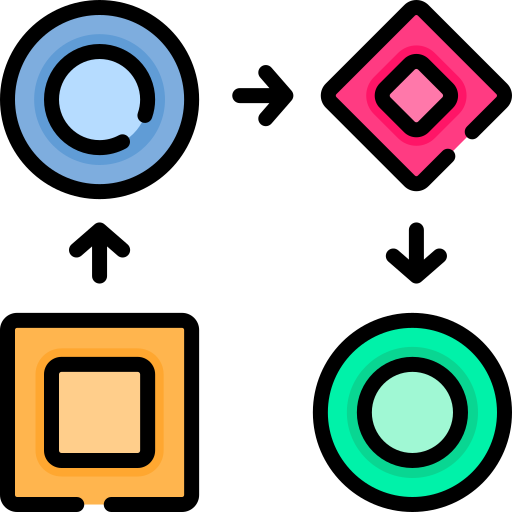

Idleon Steam Data Extractor
—
X
This is an
open source
app
This app will extract your account's data to be used in
idleon-toolbox
In order to avoid working on the real database, it will be copied to a chosen location.
Idleon DB Path
Custom Path
Select Custom Path
Target DB Path
Custom Path
Select Custom Path
Run
Copy JSON
* The process will overwrite the
target
folder
(make sure you don't have anything important in there)